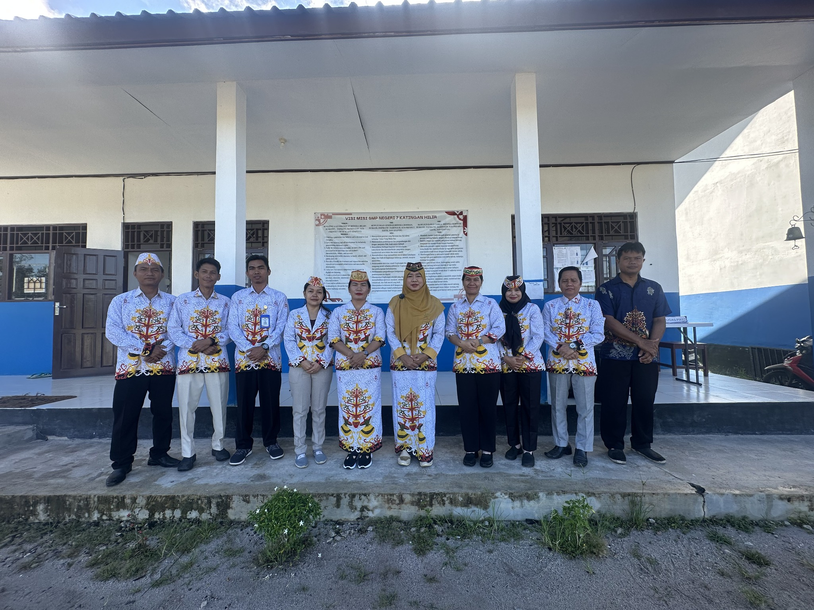

Berkarakter
Membangun pribadi yang berintegritas.
Ruang belajar, bertumbuh, berkarya, dan menginspirasi untuk membangun masa depan yang penuh potensi.

Membangun pribadi yang berintegritas.
Mendorong potensi dan pencapaian terbaik.
Menjadi ruang tumbuh dan memberi dampak.
Selamat datang di website resmi SMP Negeri 7 Katingan Hilir. Website ini menjadi ruang informasi, dokumentasi, dan kolaborasi untuk mengenal lebih dekat perjalanan, program, karya, serta prestasi sekolah kami.
Kami berkomitmen menghadirkan pendidikan yang humanis, inklusif, bermakna, dan berpihak pada tumbuh kembang murid. Melalui semangat BHINEKA, kami mendorong setiap murid untuk mengenali potensinya, berkarakter, berpikir kritis, berkreasi, peduli lingkungan, serta siap menghadapi perubahan.
Semoga ruang digital ini memperkuat hubungan sekolah, keluarga, dan masyarakat dalam mendukung pendidikan yang lebih baik.
Fahriyana, S.Pd., M.Pd.Kepala SMP Negeri 7 Katingan HilirSMP Negeri 7 Katingan Hilir berkomitmen menghadirkan pendidikan yang humanis, bermakna, inklusif, dan mendorong setiap murid berkembang.

Mewujudkan generasi BHINEKA: Beriman, Humanis, Inspiratif, Nasionalis, Eco-Friendly, Kritis, dan Adaptif.
Keberagaman, kepedulian, dan pembelajaran yang mempersiapkan murid menghadapi masa depan.
Murid, pendidik, tenaga kependidikan, keluarga, dan masyarakat bertumbuh bersama.
Program yang dirancang untuk menghadirkan pengalaman belajar bermakna dan mengembangkan potensi murid.
Membangun budaya literasi dan numerasi melalui aktivitas kontekstual, menyenangkan, dan bermakna.
Ruang bagi murid untuk menuangkan gagasan, pengalaman, imajinasi, dan kreativitas melalui karya literasi.
Mengembangkan kreativitas, keterampilan teknologi, desain, pemecahan masalah, dan inovasi.
Mengintegrasikan pembelajaran mendalam, nilai lokal, budaya, lingkungan, dan kehidupan nyata.
Pengaturan kegiatan dan waktu belajar yang adaptif untuk mendukung kebutuhan, kondisi, serta ritme pembelajaran murid dan guru.
Inovasi pendampingan wellbeing guru, refleksi, mood check, dan penguatan praktik pembelajaran mendalam secara suportif.
Ruang tumbuh murid untuk mengenali potensi, mengelola emosi, membangun resiliensi, dan mengembangkan kebiasaan positif.
Setiap pencapaian adalah hasil semangat, proses, kerja keras, dan kolaborasi.
Dokumentasi pencapaian akademik dan nonakademik murid.
Dokumentasi inovasi, pengembangan, dan pencapaian sekolah.
Apresiasi dedikasi, karya, dan praktik baik tenaga pendidik.
Setiap kegiatan menyimpan cerita, pengalaman, dan kenangan berharga.


Satu Murid, Satu Karya, Sejuta Inspirasi. Temukan cerita, ide, imajinasi, dan karya kreatif dari murid SMP Negeri 7 Katingan Hilir.
Belum ada karya yang sesuai pencarian.
Informasi penting, agenda, dan kabar terbaru dari SMP Negeri 7 Katingan Hilir.
Tinggalkan pesan, kesan, saran, atau peluang kolaborasi. Kami senang dapat terhubung dengan Anda.